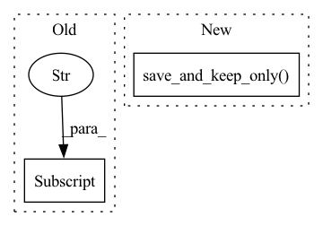

Pattern ID :40783
Before Change
sb.lr_annealing([sb.optimizer], epoch, mean(valid_loss["wer"]))
performance = {
"loss_tr": mean(train_loss["loss"] ),
"loss_valid": mean(valid_loss["loss"]),
"wer_valid": mean(valid_loss["wer"]),
}After Change
validation_wer = float(mean(valid_loss["wer"]))
print(validation_wer)
sb.lr_annealing([sb.optimizer], epoch, validation_wer)
sb.save_and_keep_only( {"wer": validation_wer}, [best_model])
// Evaluate our model
test_loss = {"loss": [], "wer": []}
sb.recover_if_possible(best_model)In pattern: SUPERPATTERN
Frequency: 3
Non-data size: 2
Instances Fragment ID: 115178861
Project Name: speechbrain/speechbrain
Commit Name: 455df49eed0d13137935a6209b303c0d2b63a2fb
Time: 2020-04-06
Author: plantinga.peter@gmail.com
File Name: recipes/CTC/TIMIT/VGG2_BLSTM_MLP/experiment.py
M Class Name: AnonimousClass
N Class Name: AnonimousClass
M Method Name: main(0)
N Method Name: main(0)
M Parent Class:
N Parent Class:
M File Name: recipes/CTC/TIMIT/VGG2_BLSTM_MLP/experiment.py
N File Name: recipes/CTC/TIMIT/VGG2_BLSTM_MLP/experiment.py
M Start Line: 22
M End Line: 44
N Start Line: 24
N End Line: 46
Before Change
print("Epoch %d complete" % epoch)
print("Train loss: %.2f" % summarize_average(train_stats["loss"]))
print("Valid loss: %.2f" % summarize_average(valid_stats["loss"]))
print("Valid error: %.2f" % summarize_average(valid_stats["error"] ))
// Extracts xvector given data and truncated modelAfter Change
def on_epoch_end(self, epoch, train_stats, valid_stats):
epoch_stats = {"epoch": epoch}
params.train_logger.log_stats(epoch_stats, train_stats, valid_stats)
params.checkpointer.save_and_keep_only()
// Extracts xvector given data and truncated model
class Extractor(Sequential): Fragment ID: 115178860
Project Name: speechbrain/speechbrain
Commit Name: b8ca006f1cc2ead7511b71fb57db2deb82e89402
Time: 2020-06-03
Author: nauman.daw@gmail.com
File Name: recipes/VoxCeleb/Xvector/experiment.py
M Class Name: XvectorBrain
N Class Name: XvectorBrain
M Method Name: on_epoch_end(4)
N Method Name: on_epoch_end(4)
M Parent Class: sb.core.Brain
N Parent Class: sb.core.Brain
M File Name: recipes/VoxCeleb/Xvector/experiment.py
N File Name: recipes/VoxCeleb/Xvector/experiment.py
M Start Line: 67
M End Line: 70
N Start Line: 68
N End Line: 70
Before Change
print("Valid loss: %.3f" % summarize_average(valid_stats["loss"]))
print("Valid PESQ: %.3f" % summarize_average(valid_stats["pesq"]))
print("Valid STOI: %.3f" % summarize_average(valid_stats["stoi"]))
print(len(valid_stats["pesq"] ))
def write_wavs(self, predictions, inputs, epoch):
ids, wavs, lens = inputsAfter Change
valid_stats,
)
params.checkpointer.save_and_keep_only(
meta={"PESQ": epoch_pesq},
importance_keys=[ckpt_recency, lambda c: c.meta["PESQ"]],
)
print("Completed epoch %d" % epoch)
print("Train loss: %.3f" % summarize_average(train_stats["loss"]))
print("Valid loss: %.3f" % summarize_average(valid_stats["loss"])) Fragment ID: 115178864
Project Name: speechbrain/speechbrain
Commit Name: 3fc1ae12a34dbcd228bed7a14877e6fa1a8b2eb2
Time: 2020-06-24
Author: jerrygood0703@gmail.com
File Name: recipes/DNS/enhance_spectral_map/experiment.py
M Class Name: SEBrain
N Class Name: SEBrain
M Method Name: on_epoch_end(4)
N Method Name: on_epoch_end(4)
M Parent Class: sb.core.Brain
N Parent Class: sb.core.Brain
M File Name: recipes/DNS/enhance_spectral_map/experiment.py
N File Name: recipes/DNS/enhance_spectral_map/experiment.py
M Start Line: 139
M End Line: 148
N Start Line: 139
N End Line: 162